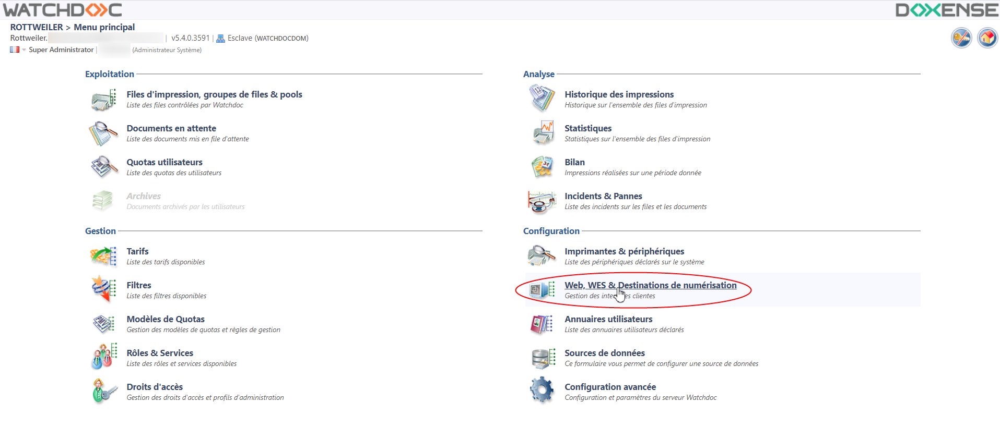
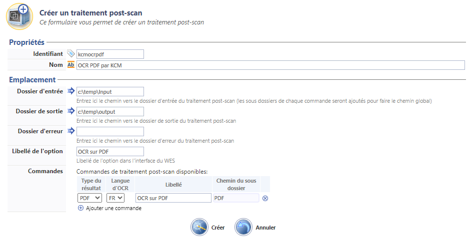
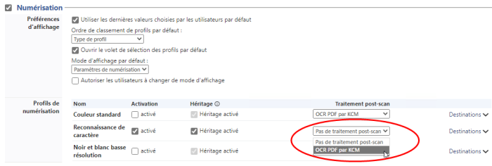

WEScan - Configurer un traitement post-scan
Présentation
WEScan intègre la possibilité de soumettre les documents numérisés à des outils tiers fournis par les constructeurs afin d'y appliquer des traitements spécifiques.
Par exemple, un document numérisé par WEScan peut ensuite être océrisé et converti dans un autre format par l'outil tiers.
Les documents numérisés par WEScan sont enregistrés dans un dossier Hotfolder dossier informatique monitoré par un logiciel qui traite chaque nouveau fichier qui y est enregistré.
(Source : fr.wiktionary.org/wiki/hot_folder)).
dossier informatique monitoré par un logiciel qui traite chaque nouveau fichier qui y est enregistré.
(Source : fr.wiktionary.org/wiki/hot_folder)).
Les outils tiers traitent les documents numérisés puis les enregistrent dans un dossier de sortie.
Dans Watchdoc, la configuration du traitement post-scan consiste à indiquer :
-
la localisation du dossier d'entrée (hotfolder monitoré par l'outil tiers) dans lequel WEScan enregistre les documents une fois numérisés ;
-
la localisation du dossier vers lequel l'outil tiers envoie les documents une fois son traitement appliqué et dans lequel WEScan récupère les documents pour poursuivre son traitement ;
Eventuellement, si plusieurs traitements sont susceptibles d'être appliqués, il est possible d'ajouter des sous-dossiers au dossier pour organiser au mieux les documents traités.
Prérequis
Avant de configurer les traitements post-scan dans Watchdoc, il convient d'avoir créé les différents dossiers nécessaires aux traitements post-scan. WEScan doit avoir accès en lecture et en écriture à ces dossiers.
Procédure
Accéder à l'interface
-
Accédez à l'interface d'administration de Watchdoc en tant qu'administrateur ;
-
depuis le Menu Principal > section Configuration, cliquez sur Web, WES & Destination de numérisation ;

{kind=link}
-
dans l'interface Web, WES & Destinations de numérisation, dans la section Destinations de numérisations figurent les traitements post-scan créés.
-
Cliquez sur le bouton Créer un nouveau traitement post-scan :
{kind=link}
Configurer le traitement
-
Dans l'interface Créer un traitement post-scan, complétez les champs :
-
section Propriétés :
-
Identifiant : saisissez l'identifiant du traitement (identifiant interne affiché dans les interfaces d'administration uniquement).
-
Nom : saisissez un nom explicite pour le traitement.
-
-
section Emplacements :
-
Dossier d'entrée : indiquez le chemin du dossier dans lequel WEScan enregistre les documents numérisés (hotfolder monitoré par l'outil tiers) ;
-
Dossier de sortie : indiquez le chemin du dossier dans lequel l'outil tiers enregistre les documents une fois qu'il les a traités ;
-
Dossier d'erreur : indiquez le chemin du dossier dans lequel l'outil tiers enregistre les documents en erreur ;
-
Libellé de l'option : saisissez le libellé sous lequel le traitement est présenté dans l'interface WEScan (par exemple : "OCR multiformat" pour un traitement permettant de générer des fichiers océrisés en MSWord, MSExcel et PDF, par exemple).
-
Commandes : détaillez cle ou les traitements appliqués :
-
Type du résultat : sélectionnez le type des documents générés par le traitement post-scan ;
-
Langue d'OCR : sélectionnez la langue dans laquelle l'OCR est réalisé ;
-
Libellé : saisissez le libellé sous lequel le traitement est présenté dans l'interface WEScan (par exemple :"OCR en PDF", "OCR en Word", etc.) ;
-
Chemin du sous dossier : saisissez le nom d'un sous-dossier (du dossier de sortie) dans lequel sont enregistrés les fichiers une fois traités :

-
-
-
Cliquez sur Créer pour enregistrer le traitement post-scan.
{kind=link}
Appliquer le traitement
Une fois le traitement créé, appliquez-le sur le profil WES :
-
dans l'interface Web, WES & Destinations de numérisation, cliquez sur le WES sur lequel vous souhaitez appliquer le traitement ;
-
dans l'interface Configuration du profil WES, section Numérisation, activez le Profil de numérisation sur lequel doit être appliqué le traitement ;
-
dans la liste, sélectionnez le traitement que vous souhaitez appliquer, puis configurez la destination :

-
cliquez sur Valider pour valider le profil de numérisation.